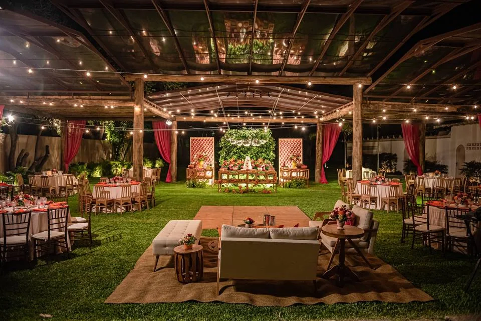
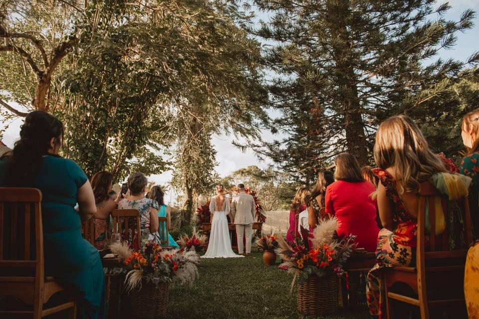
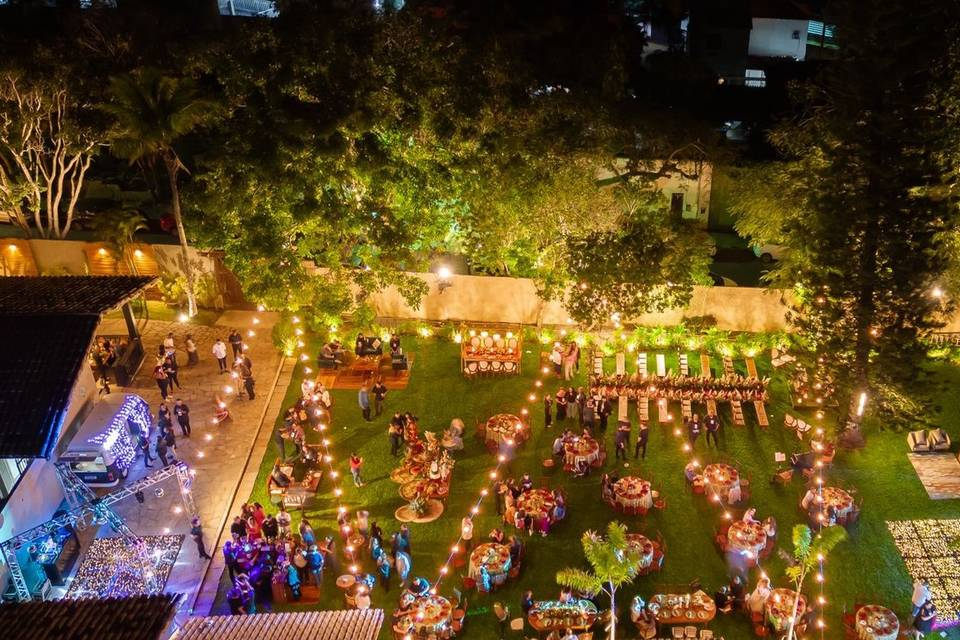
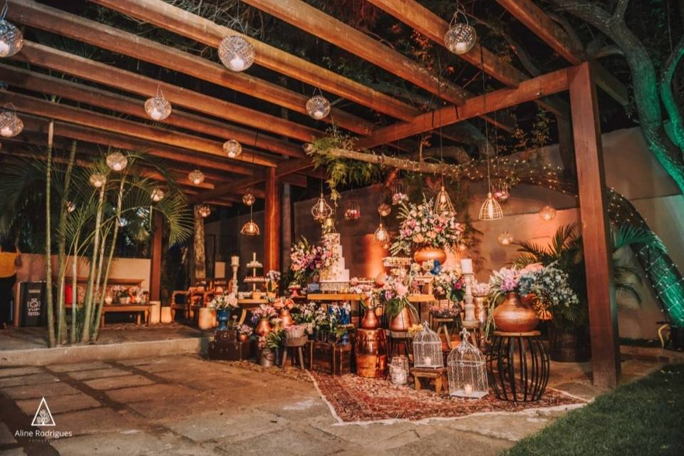

Cerimônia e recepção
Possibilidades para imaginar cerimônia ao ar livre e recepção em salão coberto conforme o formato da celebração.
Um espaço para imaginar cerimônia, recepção e festa em um mesmo percurso, na Região dos Lagos.
Conheça possibilidades de cerimônia, recepção e apoio para o planejamento do dia.
Possibilidades para imaginar cerimônia ao ar livre e recepção em salão coberto conforme o formato da celebração.
Espaço reservado para produção, fotos e momentos de preparo no dia da celebração.
Para casais que desejam organizar a celebração na Região dos Lagos.

Fotografias reais publicadas na página institucional do espaço.



“Um dia desenhado em torno daquilo que faz sentido para vocês.”
Envie as primeiras informações, converse com a equipe pelo WhatsApp e combine a melhor forma de conhecer o espaço.
Informe a data desejada, o número estimado de convidados e o que é indispensável para vocês.
Os dados do formulário acompanham a mensagem para tornar a conversa inicial mais objetiva.
A equipe orienta os próximos passos para vocês conhecerem as possibilidades do espaço.
Preencha os primeiros detalhes e continue pelo WhatsApp para consultar data e proposta.